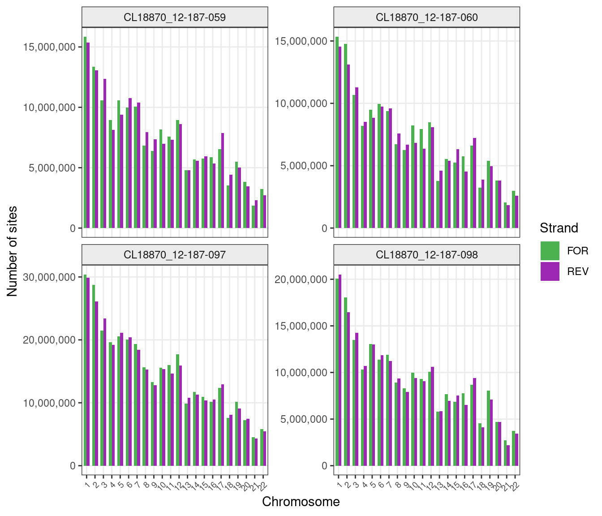
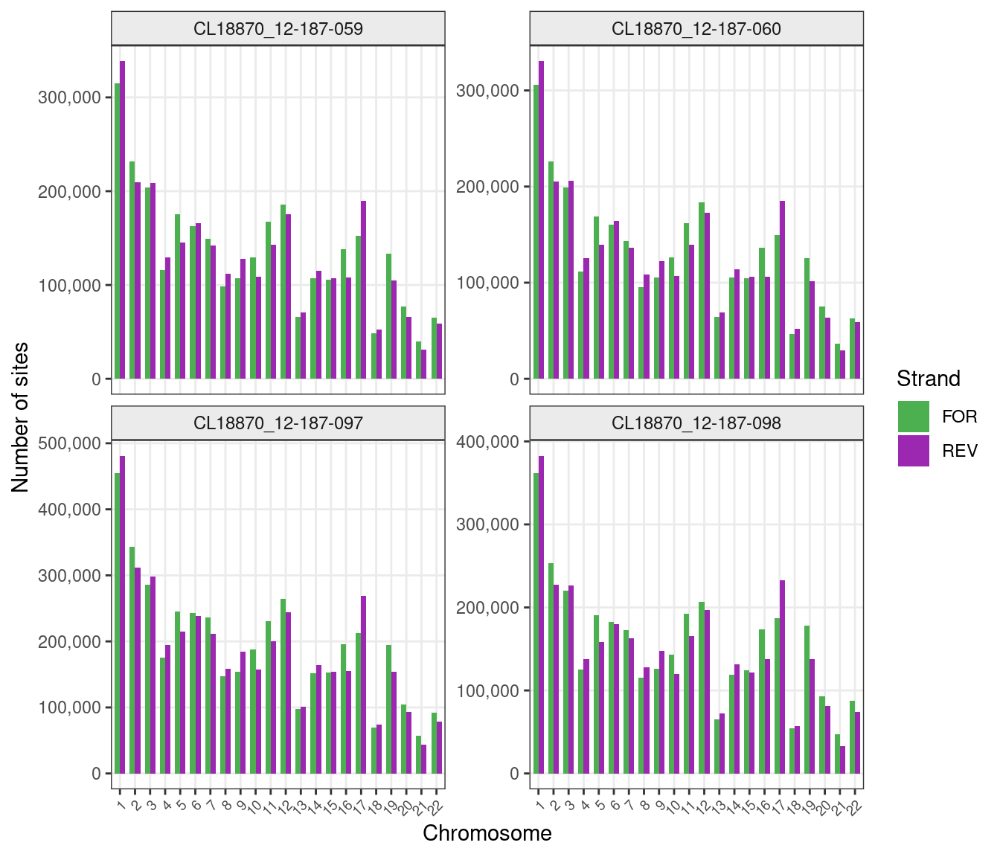
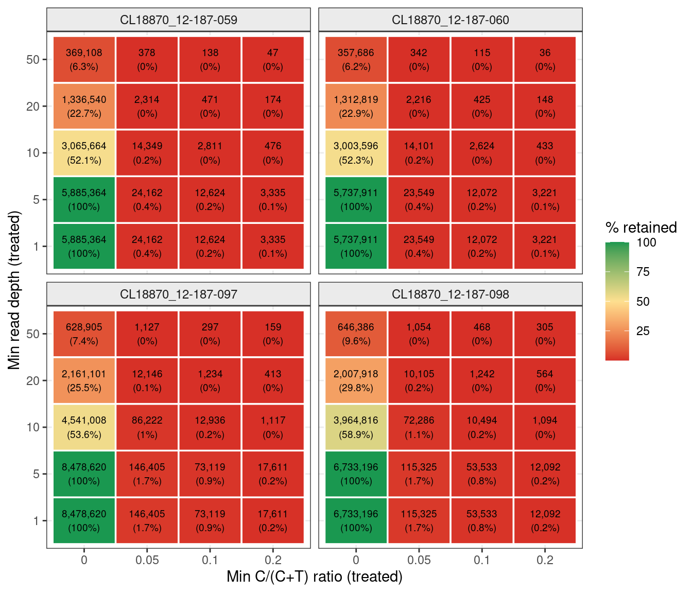
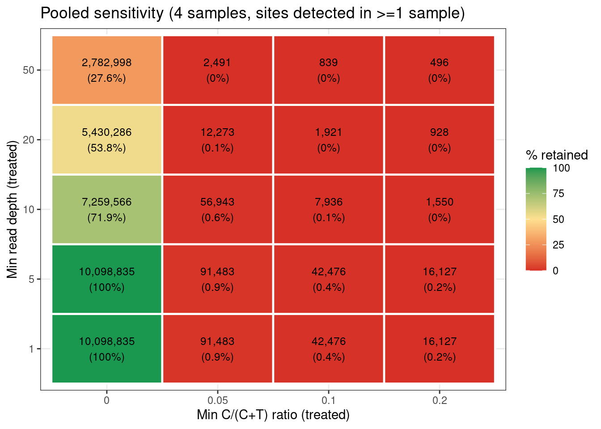
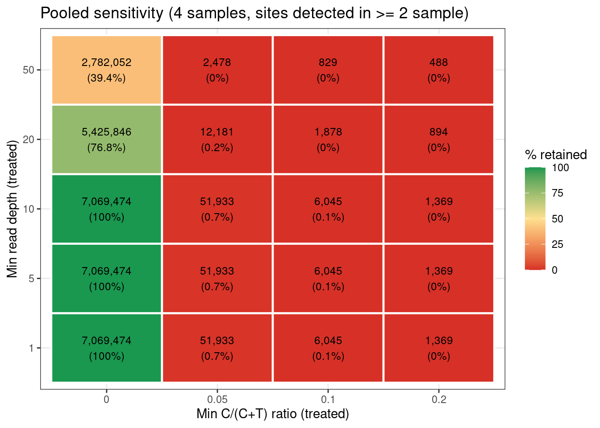
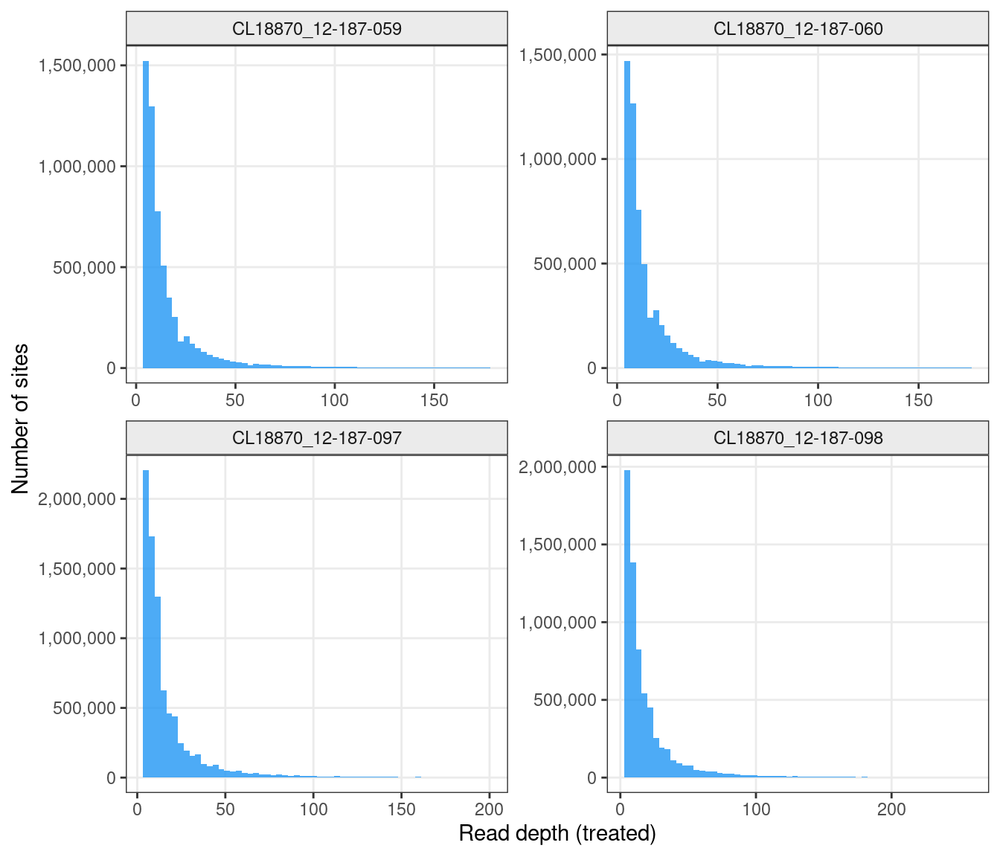
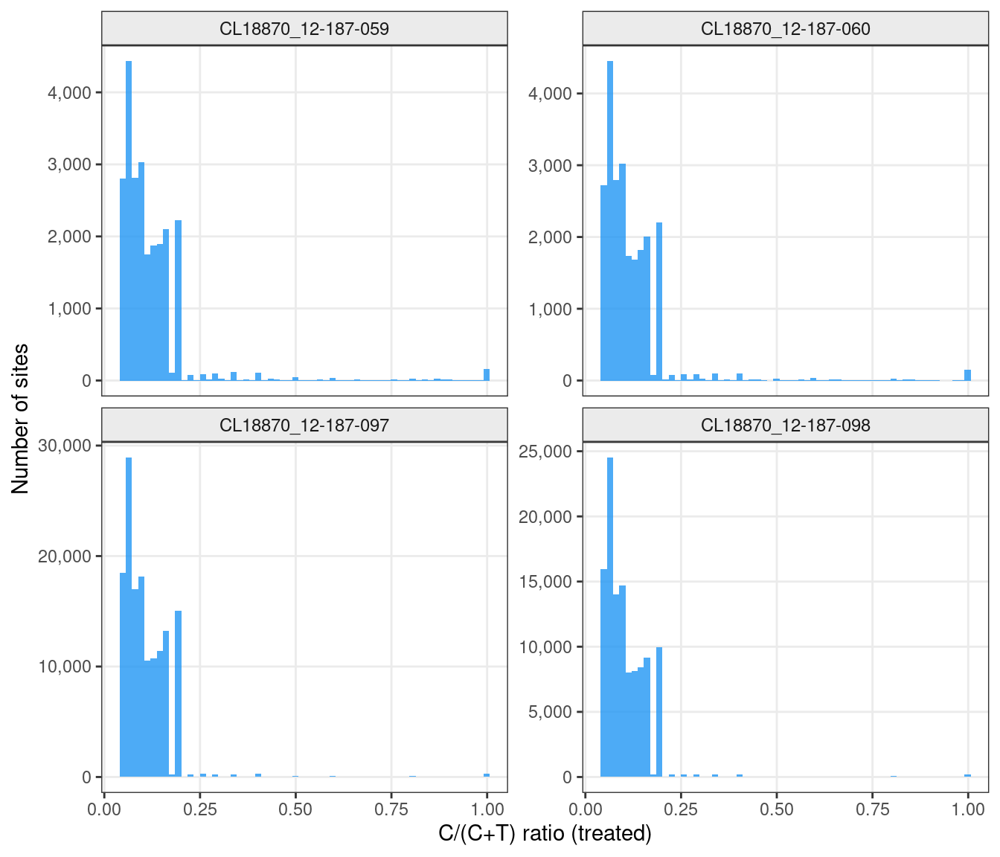

Last updated: 2026-05-31
Checks: 6 1
Knit directory: pumseq/
This reproducible R Markdown analysis was created with workflowr (version 1.7.0). The Checks tab describes the reproducibility checks that were applied when the results were created. The Past versions tab lists the development history.
The R Markdown is untracked by Git. To know which version of the R
Markdown file created these results, you’ll want to first commit it to
the Git repo. If you’re still working on the analysis, you can ignore
this warning. When you’re finished, you can run
wflow_publish to commit the R Markdown file and build the
HTML.
Great job! The global environment was empty. Objects defined in the global environment can affect the analysis in your R Markdown file in unknown ways. For reproduciblity it’s best to always run the code in an empty environment.
The command set.seed(20260202) was run prior to running
the code in the R Markdown file. Setting a seed ensures that any results
that rely on randomness, e.g. subsampling or permutations, are
reproducible.
Great job! Recording the operating system, R version, and package versions is critical for reproducibility.
Nice! There were no cached chunks for this analysis, so you can be confident that you successfully produced the results during this run.
Great job! Using relative paths to the files within your workflowr project makes it easier to run your code on other machines.
Great! You are using Git for version control. Tracking code development and connecting the code version to the results is critical for reproducibility.
The results in this page were generated with repository version cd728aa. See the Past versions tab to see a history of the changes made to the R Markdown and HTML files.
Note that you need to be careful to ensure that all relevant files for
the analysis have been committed to Git prior to generating the results
(you can use wflow_publish or
wflow_git_commit). workflowr only checks the R Markdown
file, but you know if there are other scripts or data files that it
depends on. Below is the status of the Git repository when the results
were generated:
Untracked files:
Untracked: analysis/overview.Rmd
Untracked: analysis/pipeline.Rmd
Untracked: analysis/qc_CL18870.Rmd
Unstaged changes:
Modified: analysis/index.Rmd
Note that any generated files, e.g. HTML, png, CSS, etc., are not included in this status report because it is ok for generated content to have uncommitted changes.
There are no past versions. Publish this analysis with
wflow_publish() to start tracking its development.
The pipeline(https://xsun1229.github.io/pumseq/pipeline.html) processes per-chromosome mpileup files (split by strand) and applies an input-subtraction filter to remove background noise. We evaluate:
There are 4 treated samples and 2 input samples in this cell line. We pooled the sites from the input as described here
| Cell lines | conditions | sample NO. | i7 Index Name | i7 Index Sequence | i5 Index Name | i5 Index Sequence | i5 reverse complement | Index Cat no |
|---|---|---|---|---|---|---|---|---|
| 18870 | input | 12-50-11 | 719 | AAGCGACT | 506 | TAATCTTA | TAAGATTA | E7600&E7780 |
| 18870 | input | 12-50-12 | 720 | AAGCGTTC | 506 | TAATCTTA | TAAGATTA | E7600&E7780 |
| 18870 | Treatment | 12-187-59 | 708 | TAATGCGC | 515 | TGTGGCAT | ATGCCACA | E7600&E7780 |
| 18870 | Treatment | 12-187-60 | 709 | CGGCTATG | 515 | TGTGGCAT | ATGCCACA | E7600&E7780 |
| 18870 | Treatment | 12-187-97 | Index 1 | ATCACG | Universal | NEBNext® Multiplex | ||
| 18870 | Treatment | 12-187-98 | Index 2 | CGATGT | Universal | NEBNext® Multiplex |
library(tidyverse)
library(data.table)
library(scales)
library(knitr)
library(kableExtra)
MPILE_DIR <- "/project2/xinhe/xsun/pumseq/PUM-test-CL18870/mpile"
OUT_DIR <- "/project2/xinhe/xsun/pumseq/PUM-test-CL18870/out"
CHECKPOINT <- "/project2/xinhe/xsun/pumseq/PUM-test-CL18870/pp_QC/QC_checkpoint.RData"
LOAD_CHECKPOINT <- TRUE # set FALSE to re-run from raw files
qc_dir <- "/project2/xinhe/xsun/pumseq/PUM-test-CL18870/pp_QC"
DEPTH_CUTOFFS <- c(1, 5, 10, 20, 50)
RATIO_CUTOFFS <- c(0.0, 0.05, 0.1, 0.2)
count_df <- readRDS(file.path(qc_dir, "QC_count_df.rds"))
filter_count_df <- readRDS(file.path(qc_dir, "QC_filter_count_df.rds"))
all_filter <- readRDS(file.path(qc_dir, "QC_all_filter.rds"))
cutoff_grid <- readRDS(file.path(qc_dir, "QC_cutoff_grid.rds"))
ratio_summary <- readRDS(file.path(qc_dir, "QC_ratio_summary.rds"))
strand_balance <- readRDS(file.path(qc_dir, "QC_strand_balance.rds"))
chrom_summary <- readRDS(file.path(qc_dir, "QC_chrom_summary.rds"))
depth_by_chrom <- readRDS(file.path(qc_dir, "QC_depth_by_chrom.rds"))
filter_files <- readRDS(file.path(qc_dir, "QC_filter_files.rds"))
treated_files <- readRDS(file.path(qc_dir, "QC_treated_files.rds"))
input_files <- readRDS(file.path(qc_dir, "QC_input_files.rds"))
pooled_sites <- readRDS(file.path(qc_dir, "pooled_sites.RDS"))
# Read a gzipped tab-separated pseusite file
read_pseusite <- function(path, has_header = TRUE) {
fread(cmd = paste("zcat", path),
header = has_header,
sep = "\t",
data.table = FALSE)
}
# Count lines in a gzipped file (fast, no full load)
count_sites <- function(file) {
as.integer(system(paste("zcat", file, "| wc -l"), intern = TRUE))
}
# Extract chromosome number from filename (token before .FOR/.REV)
extract_chrom <- function(paths) {
as.integer(str_extract(basename(paths), "(?<=\\.)(\\d+)(?=\\.(FOR|REV))"))
}
# Extract sample ID from filename — handles hyphens in IDs like CL18870_12-187-059
get_sample_id <- function(path) {
basename(path) %>%
str_extract("(?<=mpileup\\.|filter\\.)[A-Za-z0-9_-]+(?=\\.\\d+\\.(FOR|REV))")
}
count_df <- count_df %>% mutate(sample_id = get_sample_id(file))
filter_count_df <- filter_count_df %>% mutate(sample_id = get_sample_id(file))
all_filter <- all_filter %>% mutate(sample_id = get_sample_id(source_file))
treated_samples <- unique(count_df$sample_id[count_df$group == "treated"])
filter_samples <- unique(filter_count_df$sample_id)
all_samples <- intersect(treated_samples, filter_samples)
n_samp <- length(all_samples)
pdf_h <- 3 * ceiling(n_samp / 2)The table below shows the total number of candidate pU sites detected in each treated sample and in the pooled input before any filtering. Sites are counted across all autosomes (chr 1–22) and both strands. High site counts in the input are expected, as the input represents all C positions with any read coverage; the filtering step removes input-present sites.
table_sum <- count_df %>%
group_by(sample_id, group) %>%
summarise(
total_sites = sum(n_sites),
n_files = n(),
mean_per_chr = round(mean(n_sites)),
.groups = "drop"
)
table_sum$sample_id[table_sum$group == "input"] <- "CL18870_12-50-011.CL18870_12-50-012.pooledinput"
DT::datatable(table_sum,caption = htmltools::tags$caption( style = 'caption-side: left; text-align: left; color:black; font-size:150% ;','Raw sites summary'),options = list(pageLength = 10) )The figure below shows the number of candidate pU sites detected per chromosome in each treated sample, split by strand (FOR = forward, REV = reverse). Counts at this stage include all C positions present in the treated mpileup regardless of input signal.
theme_set(theme_bw(base_size = 11) +
theme(panel.grid.minor = element_blank(),
strip.background = element_rect(fill = "grey92"),
strip.text = element_text(size = 9)))
count_df %>%
filter(group == "treated", sample_id %in% all_samples) %>%
mutate(chrom = factor(chrom, levels = as.character(1:22))) %>%
ggplot(aes(x = chrom, y = n_sites, fill = strand)) +
geom_col(position = "dodge", width = 0.7) +
scale_fill_manual(values = c(FOR = "#4CAF50", REV = "#9C27B0")) +
scale_y_continuous(labels = comma) +
facet_wrap(~sample_id, ncol = 2, scales = "free_y") +
labs(x = "Chromosome", y = "Number of sites", fill = "Strand") +
theme(axis.text.x = element_text(angle = 45, hjust = 1, size = 7))
Raw candidate sites per chromosome per sample before input filtering. Green = forward strand (FOR), purple = reverse strand (REV).
After initial calling, sites are filtered to retain only those that are absent in the input or have an input C/(C+T) ratio < 0.1. This removes background C-to-T mismatches present in untreated RNA (due to SNPs, sequencing errors, or natural modifications).
filter_count_df %>%
group_by(sample_id) %>%
summarise(
total_filtered = sum(n_sites),
n_files = n(),
.groups = "drop"
) %>%
left_join(
count_df %>%
filter(group == "treated") %>%
group_by(sample_id) %>%
summarise(total_raw = sum(n_sites), .groups = "drop"),
by = "sample_id"
) %>%
mutate(pct_retained = round(total_filtered / total_raw * 100, 1)) %>%
kable(
col.names = c("Sample", "Sites after filter", "Files", "Raw sites", "% retained"),
format.args = list(big.mark = ","),
caption = "Sites retained after input subtraction filter."
) %>%
kable_styling(bootstrap_options = c("striped", "hover", "condensed"),
full_width = FALSE)| Sample | Sites after filter | Files | Raw sites | % retained |
|---|---|---|---|---|
| CL18870_12-187-059 | 5,885,364 | 44 | 328,888,742 | 1.8 |
| CL18870_12-187-060 | 5,737,911 | 44 | 316,277,634 | 1.8 |
| CL18870_12-187-097 | 8,478,620 | 44 | 651,675,817 | 1.3 |
| CL18870_12-187-098 | 6,733,196 | 44 | 407,461,947 | 1.7 |
The figure below shows the per-chromosome breakdown of sites surviving the filter.
filter_count_df %>%
filter(sample_id %in% all_samples) %>%
mutate(chrom = factor(chrom, levels = as.character(1:22))) %>%
ggplot(aes(x = chrom, y = n_sites, fill = strand)) +
geom_col(position = "dodge", width = 0.7) +
scale_fill_manual(values = c(FOR = "#4CAF50", REV = "#9C27B0")) +
scale_y_continuous(labels = comma) +
facet_wrap(~sample_id, ncol = 2, scales = "free_y") +
labs(x = "Chromosome", y = "Number of sites", fill = "Strand") +
theme(axis.text.x = element_text(angle = 45, hjust = 1, size = 7))
Post-filter candidate pU sites per chromosome per sample. Sites shown here were absent in the pooled input or had an input C/(C+T) ratio < 0.1.
The initial filter only removes sites present in the input. Further thresholding on read depth and C/(C+T) ratio in the treated sample is needed to improve specificity. This section explores how many sites survive at different combinations of these two cutoffs.
The figure below shows a heatmap for each sample where each cell reports the absolute number of sites retained and the percentage of post-filter sites they represent. Cells towards the top-right (high depth AND high ratio) are the most stringent; cells at the bottom-left (low depth, any ratio) are the most permissive.
What to look for: - Consistent patterns across samples indicate reproducible signal. - A ratio cutoff of ~0.1 and depth ≥ 20 are the default cutoffs from Yanming’s pipeline.
cutoff_all <- map_dfr(all_samples, function(samp) {
dat <- all_filter %>% filter(sample_id == samp)
expand.grid(min_depth = DEPTH_CUTOFFS, min_ratio = RATIO_CUTOFFS) %>%
mutate(
sample_id = samp,
n_sites = mapply(function(d, r)
sum(dat$depth >= d & dat$ratio >= r, na.rm = TRUE),
min_depth, min_ratio),
pct_retained = n_sites / nrow(dat) * 100
)
})
cutoff_all %>%
mutate(label = paste0(comma(n_sites), "\n(", round(pct_retained, 1), "%)")) %>%
ggplot(aes(x = factor(min_ratio), y = factor(min_depth), fill = pct_retained)) +
geom_tile(color = "white", linewidth = 0.6) +
geom_text(aes(label = label), size = 2.5) +
scale_fill_gradient2(low = "#d73027", mid = "#fee090", high = "#1a9850",
midpoint = 50, name = "% retained") +
facet_wrap(~sample_id, ncol = 2) +
labs(x = "Min C/(C+T) ratio (treated)", y = "Min read depth (treated)")
Sensitivity heatmap showing sites retained at each combination of minimum read depth (y-axis) and minimum C/(C+T) ratio (x-axis) in the treated sample. Each cell shows the absolute count and percentage of post-filter sites retained. Color scale: red = few sites retained, green = many sites retained.
In addition to per-sample cutoffs, it is useful to examine how many unique genomic positions survive across all samples combined. Here all post-filter sites from every treated sample are pooled into a single set and the same depth × ratio cutoff grid is applied.
What to look for:
# Combine all samples — one row per unique genomic position (ref + pos + strand)
# For sites present in multiple samples, sum C and T counts (and recompute depth and ratio from them depth and ratio observed)
# (a site passes if it passes in at least one sample)
pooled_sites_2samples <- pooled_sites[pooled_sites$n_samples >= 2, ]
cat("Total unique genomic positions across all samples:", nrow(pooled_sites), "\n")Total unique genomic positions across all samples: 10098835 cat("Total unique genomic positions in >= 2 samples:", nrow(pooled_sites_2samples), "\n")Total unique genomic positions in >= 2 samples: 7069474 cutoff_pooled <- expand.grid(min_depth = DEPTH_CUTOFFS,
min_ratio = RATIO_CUTOFFS) %>%
mutate(
n_sites = mapply(function(d, r)
sum(pooled_sites$depth >= d & pooled_sites$ratio >= r),
min_depth, min_ratio),
pct_retained = round(n_sites / nrow(pooled_sites) * 100, 1)
)
cutoff_pooled %>%
mutate(n_sites = comma(n_sites)) %>%
pivot_wider(names_from = min_ratio,
values_from = c(n_sites, pct_retained),
names_glue = "ratio_{min_ratio}_{.value}") # A tibble: 5 x 9
min_depth ratio_0_n_sites ratio_0.05_n_sites ratio_0.1_n_sites
<dbl> <chr> <chr> <chr>
1 1 10,098,835 91,483 42,476
2 5 10,098,835 91,483 42,476
3 10 7,259,566 56,943 7,936
4 20 5,430,286 12,273 1,921
5 50 2,782,998 2,491 839
# i 5 more variables: ratio_0.2_n_sites <chr>, ratio_0_pct_retained <dbl>,
# ratio_0.05_pct_retained <dbl>, ratio_0.1_pct_retained <dbl>,
# ratio_0.2_pct_retained <dbl>Figure below shows the pooled sensitivity as a heatmap, directly comparable to the per-sample Figure.
cutoff_pooled %>%
mutate(label = paste0(comma(n_sites), "\n(", pct_retained, "%)")) %>%
ggplot(aes(x = factor(min_ratio), y = factor(min_depth), fill = pct_retained)) +
geom_tile(color = "white", linewidth = 0.8) +
geom_text(aes(label = label), size = 3.2) +
scale_fill_gradient2(low = "#d73027", mid = "#fee090", high = "#1a9850",
midpoint = 50, name = "% retained") +
labs(title = paste0("Pooled sensitivity (", n_samp, " samples, sites detected in >=1 sample)"),
x = "Min C/(C+T) ratio (treated)", y = "Min read depth (treated)")
Sensitivity heatmap for the pooled site set (all samples combined).
We also filtered the pooled sites based on the number of samples in which they were detected.
cutoff_pooled <- expand.grid(min_depth = DEPTH_CUTOFFS,
min_ratio = RATIO_CUTOFFS) %>%
mutate(
n_sites = mapply(function(d, r)
sum(pooled_sites_2samples$depth >= d & pooled_sites_2samples$ratio >= r),
min_depth, min_ratio),
pct_retained = round(n_sites / nrow(pooled_sites_2samples) * 100, 1)
)
cutoff_pooled %>%
mutate(n_sites = comma(n_sites)) %>%
pivot_wider(names_from = min_ratio,
values_from = c(n_sites, pct_retained),
names_glue = "ratio_{min_ratio}_{.value}") # A tibble: 5 x 9
min_depth ratio_0_n_sites ratio_0.05_n_sites ratio_0.1_n_sites
<dbl> <chr> <chr> <chr>
1 1 7,069,474 51,933 6,045
2 5 7,069,474 51,933 6,045
3 10 7,069,474 51,933 6,045
4 20 5,425,846 12,181 1,878
5 50 2,782,052 2,478 829
# i 5 more variables: ratio_0.2_n_sites <chr>, ratio_0_pct_retained <dbl>,
# ratio_0.05_pct_retained <dbl>, ratio_0.1_pct_retained <dbl>,
# ratio_0.2_pct_retained <dbl>Figure below shows the pooled sensitivity as a heatmap, directly comparable to the per-sample Figure.
cutoff_pooled %>%
mutate(label = paste0(comma(n_sites), "\n(", pct_retained, "%)")) %>%
ggplot(aes(x = factor(min_ratio), y = factor(min_depth), fill = pct_retained)) +
geom_tile(color = "white", linewidth = 0.8) +
geom_text(aes(label = label), size = 3.2) +
scale_fill_gradient2(low = "#d73027", mid = "#fee090", high = "#1a9850",
midpoint = 50, name = "% retained") +
labs(title = paste0("Pooled sensitivity (", n_samp, " samples, sites detected in >= 2 sample)"),
x = "Min C/(C+T) ratio (treated)", y = "Min read depth (treated)")
Sensitivity heatmap for the pooled site set (all samples combined).
Figure below shows the distribution of read depths across post-filter sites in each treated sample.
Values above the 99th percentile are excluded to prevent extreme outliers (e.g., rRNA or highly expressed transcripts) from compressing the rest of the distribution.
What to look for:
all_filter %>%
filter(sample_id %in% all_samples, !is.na(depth)) %>%
group_by(sample_id) %>%
filter(depth < quantile(depth, 0.99, na.rm = TRUE)) %>%
ungroup() %>%
ggplot(aes(x = depth)) +
geom_histogram(bins = 60, fill = "#2196F3", alpha = 0.8) +
scale_y_continuous(labels = comma) +
facet_wrap(~sample_id, ncol = 2, scales = "free") +
labs(x = "Read depth (treated)", y = "Number of sites")
Distribution of per-site read depth in treated samples (post-filter sites only, values below the 99th percentile shown). Higher depth improves the reliability of the C/(C+T) ratio estimate.
depth_by_chrom %>%
mutate(across(where(is.numeric), ~round(., 1))) %>%
kable(
col.names = c("Chrom", "N sites", "Mean depth", "25th pct",
"Median", "75th pct", "95th pct"),
caption = "Per-chromosome read depth statistics across all samples (post-filter)."
) %>%
kable_styling(bootstrap_options = c("striped", "hover", "condensed"),
full_width = FALSE) %>%
scroll_box(height = "300px")| Chrom | N sites | Mean depth | 25th pct | Median | 75th pct | 95th pct |
|---|---|---|---|---|---|---|
| 1 | 2969824 | 24.3 | 7 | 11 | 21 | 73.0 |
| 2 | 2008703 | 24.4 | 6 | 10 | 20 | 66.0 |
| 3 | 1848547 | 21.5 | 7 | 10 | 19 | 63.0 |
| 4 | 1116020 | 20.3 | 6 | 10 | 18 | 51.0 |
| 5 | 1438094 | 24.7 | 7 | 10 | 19 | 63.0 |
| 6 | 1498028 | 32.7 | 6 | 10 | 19 | 81.0 |
| 7 | 1353987 | 23.7 | 6 | 10 | 18 | 57.0 |
| 8 | 962568 | 22.0 | 6 | 10 | 18 | 61.0 |
| 9 | 1075919 | 22.2 | 6 | 10 | 18 | 55.0 |
| 10 | 1080354 | 20.2 | 6 | 10 | 19 | 61.0 |
| 11 | 1401359 | 28.8 | 7 | 11 | 22 | 81.1 |
| 12 | 1629740 | 28.2 | 7 | 11 | 21 | 77.0 |
| 13 | 606666 | 22.6 | 6 | 10 | 18 | 48.0 |
| 14 | 1007838 | 30.5 | 7 | 10 | 19 | 65.0 |
| 15 | 975974 | 29.9 | 7 | 10 | 19 | 54.0 |
| 16 | 1150045 | 21.4 | 7 | 11 | 19 | 57.0 |
| 17 | 1577249 | 25.1 | 7 | 11 | 21 | 66.0 |
| 18 | 454814 | 18.9 | 6 | 10 | 18 | 53.0 |
| 19 | 1130234 | 33.0 | 7 | 11 | 24 | 89.0 |
| 20 | 652764 | 20.5 | 7 | 11 | 21 | 60.0 |
| 21 | 317515 | 20.7 | 6 | 10 | 18 | 58.0 |
| 22 | 578849 | 26.0 | 7 | 11 | 22 | 79.0 |
all_filter %>%
filter(sample_id %in% all_samples, !is.na(ratio)) %>%
group_by(sample_id) %>%
summarise(
mean_ratio = round(mean(ratio), 3),
median_ratio = round(median(ratio), 3),
pct_gt0.05 = round(mean(ratio >= 0.05) * 100, 1),
pct_gt0.1 = round(mean(ratio >= 0.1) * 100, 1),
pct_gt0.2 = round(mean(ratio >= 0.2) * 100, 1),
.groups = "drop"
) %>%
kable(
col.names = c("Sample", "Mean ratio", "Median ratio",
"% ≥ 0.05", "% ≥ 0.10", "% ≥ 0.20"),
caption = "C/(C+T) ratio summary for post-filter treated sites."
) %>%
kable_styling(bootstrap_options = c("striped", "hover", "condensed"),
full_width = FALSE)| Sample | Mean ratio | Median ratio | % <U+2265> 0.05 | % <U+2265> 0.10 | % <U+2265> 0.20 |
|---|---|---|---|---|---|
| CL18870_12-187-059 | 0.001 | 0 | 0.4 | 0.2 | 0.1 |
| CL18870_12-187-060 | 0.001 | 0 | 0.4 | 0.2 | 0.1 |
| CL18870_12-187-097 | 0.003 | 0 | 1.7 | 0.9 | 0.2 |
| CL18870_12-187-098 | 0.003 | 0 | 1.7 | 0.8 | 0.2 |
Figure below shows the distribution of C/(C+T) ratios restricted to sites with ratio ≥ 0.05. Sites with ratio = 0 are excluded here to focus on the informative part of the distribution.
What to look for: - A right-skewed distribution with a peak near low positive values is typical: most sites have modest conversion rates. - Large differences in the ratio distribution between samples could indicate technical variability in CMC treatment efficiency.
all_filter %>%
filter(sample_id %in% all_samples, !is.na(ratio), ratio >= 0.05) %>%
ggplot(aes(x = ratio)) +
geom_histogram(bins = 60, fill = "#2196F3", alpha = 0.8, boundary = 0) +
scale_y_continuous(labels = comma) +
facet_wrap(~sample_id, ncol = 2, scales = "free_y") +
labs(x = "C/(C+T) ratio (treated)", y = "Number of sites")
Distribution of C/(C+T) ratios in treated samples, restricted to sites with ratio <U+2265> 0.05. Sites with ratio = 0 are omitted to focus on positions showing evidence of CMC-induced misincorporation. A higher ratio indicates stronger modification signal at that position.
Balanced site counts across forward and reverse strands within each chromosome are expected for an unbiased experiment. Large imbalances could indicate strand-specific mapping issues or biased transcript coverage.
filter_count_df %>%
filter(sample_id %in% all_samples) %>%
group_by(sample_id, strand) %>%
summarise(total_sites = sum(n_sites), .groups = "drop") %>%
pivot_wider(names_from = strand, values_from = total_sites) %>%
mutate(FOR_REV_ratio = round(FOR / REV, 2)) %>%
kable(
col.names = c("Sample", "FOR sites", "REV sites", "FOR/REV ratio"),
format.args = list(big.mark = ","),
caption = "Strand balance of post-filter sites per sample. FOR/REV ratio close to 1 indicates balanced strand coverage."
) %>%
kable_styling(bootstrap_options = c("striped", "hover", "condensed"),
full_width = FALSE)| Sample | FOR sites | REV sites | FOR/REV ratio |
|---|---|---|---|
| CL18870_12-187-059 | 2,975,320 | 2,910,044 | 1.02 |
| CL18870_12-187-060 | 2,894,603 | 2,843,308 | 1.02 |
| CL18870_12-187-097 | 4,296,582 | 4,182,038 | 1.03 |
| CL18870_12-187-098 | 3,421,005 | 3,312,191 | 1.03 |
sessionInfo()R version 4.2.0 (2022-04-22)
Platform: x86_64-pc-linux-gnu (64-bit)
Running under: CentOS Linux 7 (Core)
Matrix products: default
BLAS/LAPACK: /software/openblas-0.3.13-el7-x86_64/lib/libopenblas_haswellp-r0.3.13.so
locale:
[1] C
attached base packages:
[1] stats graphics grDevices utils datasets methods base
other attached packages:
[1] kableExtra_1.4.0 knitr_1.39 scales_1.4.0 data.table_1.14.2
[5] forcats_0.5.1 stringr_1.5.1 dplyr_1.1.4 purrr_1.0.2
[9] readr_2.1.2 tidyr_1.3.0 tibble_3.2.1 ggplot2_4.0.0
[13] tidyverse_1.3.1
loaded via a namespace (and not attached):
[1] httr_1.4.3 sass_0.4.1 jsonlite_1.8.0 viridisLite_0.4.0
[5] modelr_0.1.8 bslib_0.3.1 S7_0.2.0 assertthat_0.2.1
[9] highr_0.9 cellranger_1.1.0 yaml_2.3.5 pillar_1.9.0
[13] backports_1.4.1 glue_1.6.2 digest_0.6.29 RColorBrewer_1.1-3
[17] promises_1.2.0.1 rvest_1.0.2 htmltools_0.5.2 httpuv_1.6.5
[21] pkgconfig_2.0.3 broom_0.8.0 haven_2.5.0 svglite_2.1.0
[25] later_1.3.0 tzdb_0.4.0 git2r_0.30.1 generics_0.1.4
[29] farver_2.1.0 ellipsis_0.3.2 DT_0.22 withr_2.5.0
[33] cli_3.6.1 magrittr_2.0.3 crayon_1.5.1 readxl_1.4.0
[37] evaluate_0.15 fs_1.5.2 fansi_1.0.3 xml2_1.3.3
[41] tools_4.2.0 hms_1.1.1 lifecycle_1.0.4 reprex_2.0.1
[45] compiler_4.2.0 jquerylib_0.1.4 systemfonts_1.0.4 rlang_1.1.2
[49] grid_4.2.0 dichromat_2.0-0.1 rstudioapi_0.13 htmlwidgets_1.5.4
[53] crosstalk_1.2.0 labeling_0.4.2 rmarkdown_2.25 gtable_0.3.6
[57] DBI_1.2.2 R6_2.5.1 lubridate_1.8.0 fastmap_1.1.0
[61] utf8_1.2.2 workflowr_1.7.0 rprojroot_2.0.3 stringi_1.7.6
[65] Rcpp_1.0.12 vctrs_0.6.5 dbplyr_2.1.1 tidyselect_1.2.0
[69] xfun_0.41